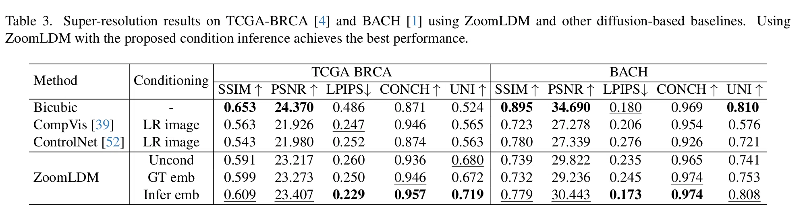

同一张 LR，六种处理并排：LR / 双三次 / DLSS-NR / TinySR / SinSR / MiniMax。 鼠标移到任一图上，六张同步放大到同一位置；点下方缩略图换样本。
100 个官方测试裁剪对：LR 128×128，参考 512×512，固定 4×。
数据取自 StableSR 官方测试集里的 RealSRVal_crop128（TinySR、SinSR 论文所用的同一份 RealSR 验证集），
各方法均直接使用官方发布权重，没有微调或重训。
PSNR / SSIM 在 YCbCr 的 Y 通道上计算，与 TinySR、SinSR 论文口径一致；LPIPS / DISTS / NIQE / MUSIQ / MANIQA / FID 用 pyiqa 默认权重。
| 方法 | 参数量 | PSNR ↑ | SSIM ↑ | LPIPS ↓ | DISTS ↓ | NIQE ↓ | MUSIQ ↑ | MANIQA ↑ | FID ↓ |
|---|---|---|---|---|---|---|---|---|---|
| 双线性 | — | 26.88 | 0.7457 | 0.4736 | 0.2718 | 10.64 | 24.83 | 0.3447 | 146.06 |
| 双三次 | — | 27.11 | 0.7555 | 0.4564 | 0.2633 | 8.99 | 25.81 | 0.3529 | 140.84 |
| TinySR | 539.4 M | 24.79 | 0.7171 | 0.2806 | 0.2123 | 4.74 | 69.78 | 0.6211 | 118.16 |
| SinSR | 174.7 M | 26.25 | 0.7342 | 0.3198 | 0.2349 | 6.32 | 60.59 | 0.5420 | 137.92 |
| MiniMax H3-Image | 67.1 B | 19.59 | 0.5814 | 0.3867 | 0.2380 | 5.08 | 66.72 | 0.6317 | 125.79 |
100 对 · LR 128×128 → HR 512×512 · 官方权重 · 2024-11 集群实测（H800）
| 论文报告值（RealSR ×4，Y 通道） | PSNR ↑ | SSIM ↑ | 本页同口径复现 |
|---|---|---|---|
| TinySR-s1 | 24.79 | 0.7171 | 24.79 / 0.7171 |
| SinSR-s1 | 26.27 | 0.7351 | 26.25 / 0.7342 |
| ResShift | 26.39 | 0.7567 | — |
| BSRGAN | 26.38 | 0.7651 | — |
| Real-ESRGAN | 26.65 | 0.7603 | — |
TinySR (arXiv 2508.17434) Table, RealSR x4, Y channel。本页复现的 TinySR / SinSR 与论文报告值基本重合，说明测试集、权重与指标口径三者对得上。
口径说明：LPIPS / DISTS 逐图计算后取平均；NIQE / MUSIQ / MANIQA 同为逐图平均；FID 以整目录（100 张）作为一个集合计算， 因此 FID 的方差比逐图指标大得多，只适合看量级。PSNR / SSIM 的箭头方向是「越高越好」，LPIPS / DISTS / NIQE / FID 是「越低越好」。
每个数字都是同一台机器上跑出来的，不是论文里的引用值。GPU 为 H800 80 GB，fp16，batch = 1，预热 2 次后取 5 次的中位数； 计时不含读图、存图与色彩对齐（即模型本身的计算时间）。DLSS-NR 那几行是 M4 Pro CPU 上的 PyTorch 实现——它只有 CPU 版本，没法上 GPU 对比，这里如实标出。
| 模型 | 设备 | 输入 → 输出 | 端到端 | 分段 / 开销 | 峰值显存 |
|---|---|---|---|---|---|
| TinySR | H800 | 128×128 → 512×512 | 21.5 ms | 编码 1.3 / transformer 13.1 / 解码 4.6 ms | 1.2 GB |
| TinySR | H800 | 480×270 → 1920×1080 | 237 ms | 15.5 / 192 / 27.2 ms · latent 切成 64×64 块 | 2.0 GB |
| TinySR | H800 | 960×540 → 3840×2160 | 746 ms | 68.6 / 570 / 104 ms · latent 切成 64×64 块 | 5.9 GB |
| SinSR | H800 | 128×128 → 512×512 | 248 ms | 1 块 × 209 ms（编码 + 单步 + 解码） | 1.8 GB |
| SinSR | H800 | 480×270 → 1920×1080 | 2.63 s | 4 块 × 610 ms（官方 256 / 步长 224 切块） | 18.4 GB |
| SinSR | H800 | 960×540 → 3840×2160 | 10.4 s | 15 块 × 616 ms | 18.5 GB |
| MiniMax H3-Image | H800 | 128×128 → 512×512 | 5.70 s | 6 步去噪 ≈ 5.7 s，解码 9.7 ms | ≈ 70 GB |
| DLSS-NR | M4 Pro CPU | 929×530 → 同尺寸（1×） | 3.3 s | 152 层，输入输出同分辨率 | — |
| DLSS-NR | M4 Pro CPU | 1920×1080 → 同尺寸（1×） | 8.4 s | — | — |
| DLSS-NR | M4 Pro CPU | 2560×1440 → 同尺寸（1×） | 13.8 s | — | — |
| DLSS-NR | M4 Pro CPU | 3840×2160 → 同尺寸（1×） | 35.9 s | — | — |
| 双三次 / 双线性 | CPU | 128×128 → 512×512 | ≈ 1 ms | Pillow 插值，无网络 | — |
同一 512×512 输出规格下：TinySR 21.5 ms，SinSR 248 ms（11.5×），MiniMax 5.70 s（265×）；到 4K 时差距同样维持（746 ms vs 10.4 s）。
几点口径说明：TinySR 的 1080p / 4K 与 SinSR 的全部规格都走各自官方的切块推理，块数与单块耗时列在「分段 / 开销」里，所以这两行不是单纯的 FLOPs 缩放；
MiniMax 的数字取自服务端日志的 Pixel data generated successfully，含 6 步去噪与解码，不含网络往返，100 次请求的分布是 min 5.60 s / 中位 5.70 s / max 5.84 s，
首次冷启动请求 200 s 已剔除；DLSS-NR 是 CPU 上的单线程 PyTorch 复现，若换到 GPU 会快一到两个数量级，但目前没有可用的 CUDA 实现，所以只报 CPU 值。
同一份测试集里的 10 个裁剪样本，七张图同步 3× 放大：鼠标移到任一图上，其余六张跟到同一位置。 LR 以最近邻 4× 放大显示（真实分辨率 128×128），这样它和 512×512 的结果在同一尺度上可直接对照。
六格里的每一项在做什么，按输入输出与来源说明。
参考图 4× 下采样得到的低清图（如 3840×2560 → 960×640），是下面所有方法共同的起点。
Pillow 的双三次插值，把 LR 直接放大到参考尺寸。不做任何学习，作为插值基线；协议里另有一份双线性放大版本，同属基线。
NVIDIA 神经渲染网络的 PyTorch 复现，权重取自 nvngx_dlssnr.dll 310.9.16 的 preset 1（152 层）。只做 1×，输入是双线性放大图，输出与它同尺寸。
轻量级超分模型，官方权重。直接把 LR 作为输入，输出为参考尺寸的 4× 结果。
单步扩散式超分模型，官方权重。同样以 LR 为输入，一次前向输出 4× 结果。
MiniMax 图像编辑接口的保内容输出，目标是改写观感而不是严格超分，因此与其他方法不完全是同一任务。
这不是跑分出错。PSNR 衡量的是「和参考图逐像素有多接近」，不是「看起来有多清楚」； 在 4× 超分里，这两件事经常互相拉扯——双三次的 PSNR 更高，并不代表它更好。
同一张 LR 对应无数张合理的 HR。逐像素误差（MSE）最小的那张，是把所有可能性平均后的结果： 细节被抹平、边缘发软。双三次插值给出的正是这种平滑的低频近似，用 L1/L2 训练的回归式超分也一样， 所以它们天然占 PSNR/SSIM 的便宜。SSIM 看的是局部亮度、对比度和结构，对「糊」同样比较宽容。
SinSR、TinySR 这类扩散模型从 p(HR|LR) 里采样一张具体的图，细节更锐、更像照片；
但生成的高频（草、毛发、砖缝、皮肤纹理）很难和参考图逐像素重合。纹理位置差一点，平方误差就会明显变大。
模型越敢补细节，PSNR 往往越低；把采样做得更确定、更接近均值，PSNR 会回来，图也会重新变糊。
PSNR/SSIM 只看低层像素与局部结构；LPIPS 用深度特征衡量感知差异；病理里的 CONCH/UNI 则在基础模型的特征空间里衡量相似度。三者的排序经常不一致——「糊而准」和「锐而像」可以同时成立。

“SSIM and PSNR are slightly misleading as they favor the blurry bicubic images.” —— ZoomLDM 论文 4.4 节。大意：SSIM / PSNR 有点误导，因为它们偏爱模糊的双三次结果。
补充：PSNR 本身仍是有意义的——它衡量保真度，适合压缩、医学测量这类任务；只是对生成式超分， 它和感知质量不是一回事。另外，不同论文的 PSNR 不能直接横比（GT 来源、JPEG 质量、裁剪与对齐方式都不同）， 跨论文横比要非常谨慎；同一张表内的相对关系更可靠。